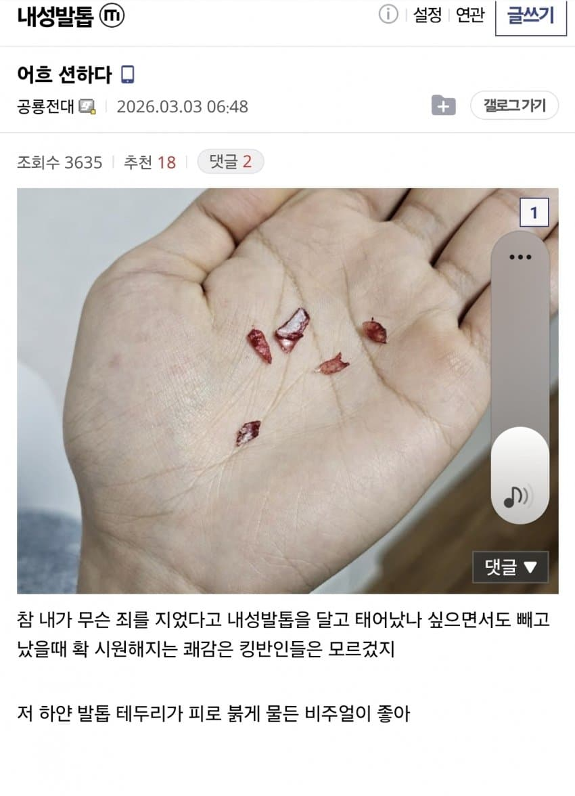
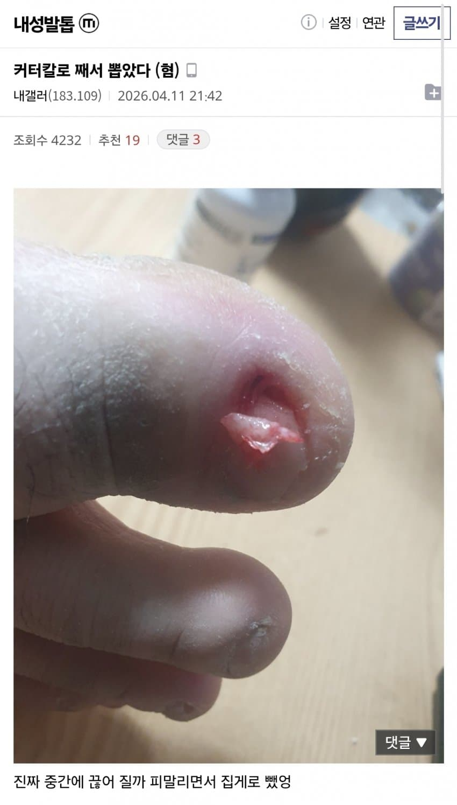
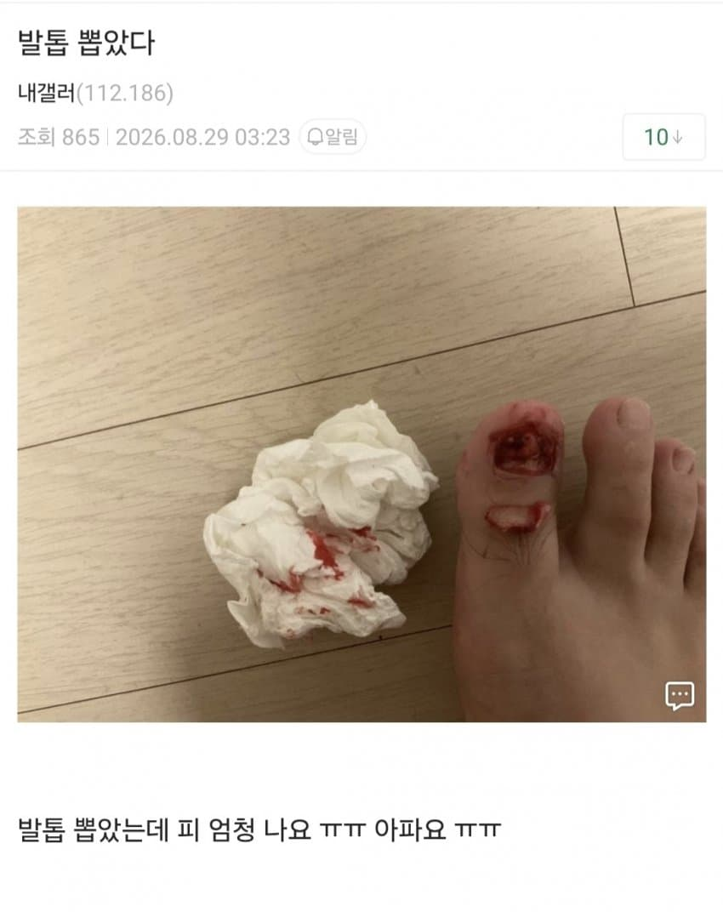
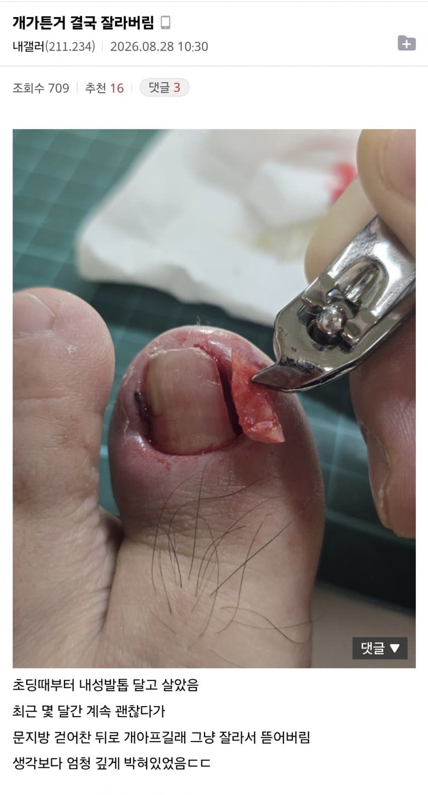
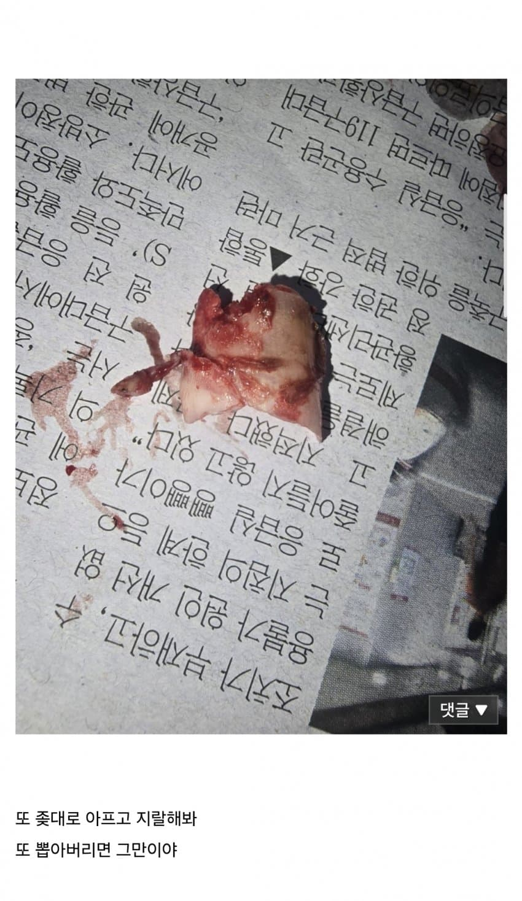

오즉 아프면 저럴까 싶음





오즉 아프면 저럴까 싶음
나도 군대에서 자주 행군하면서 발톱 다 살에 박혔었는데 저거 자르고 뽑는거 엄청 아프더라
근데 저렇게 중간에 쪼개지면 쥐며느리발톱? 처럼 갈라진거 자라나서 더 힘들거나 그러진 않나?
난 예전에 새끼발톱이 두갈래로 자라서 세게 딛거나 어디 찧으면 무조건 바깥쪽 발톱 찢어지거나 빠지면서 피나고 개같았었는데
그게 발톱중간에 끈어지면 ㅇㅇ 갈라지게 생김 그럴땐 아예 그거 근원을 제거해야되서 뽑아야댐 한번 싹
그래야 갈라지지않음 문제는 그게 쉽냐가 관건이지만....
막짤은 발가락 자른거 아님?ㅋㅋㅋ
내성발톱은 수술해도 재발할 확률이 디게 높다
선천적으로 손발톱이 휘거나
발볼이 좁은 신발을 신거나
수술해도 재발 하는 사람들은 걍 포기하고 저렇게 관우처럼 살아가는거
무좀치료를 먼저 하면 된다
발톱이 휜다? 내성발톱이 됐다?
99.9999%로 발톱무좀 있음
극한의 확율로 0.0001%가 진로 손발톱이 지좆대로 휠지도 모르지 근데 일단 발톱이 휘고 딱딱해지면 걍 무좀임 초기엔 색 변화가 없어서 모름
병원가서 한번 뚜따하고 담부터 발톱 일자로 자르면 되는데..
해봤는데 또 개지랄로 자람.. 분명 꼬매놨는데 씨발련이 또 지랄로 자랐음 별 개지랄을 해봤는데 또 옆으로 자람
흠 발톱자체가 그럴수도 있나봄.. 나는 한 1/3 날리고 진짜 뾰족할정도로 일자로 자르고 가운데를 좀 사포질해주니까 펴져서 그담부터 정상으로 자람
될때까지 가챠한거 아니냐
ㅋㅋㅋ아님 원큐엿음
난 병원가서 자르고 발톱 뿌리부분까지 칼로째서 레이저로 지지고 그랬는데 결말은 내 오른쪽 엄지발톱이 3개가 되는거였어
관우는 걍 계집애네
어후 등골이 서늘하네
막짤은 그냥 개 미친새끼 아님?
심발 편한거 신고 걸음걸이 바꾸면 달라지는거 아니였어?ㅠㅠ 저걸 저렇게 뽑아야 되는거야? ㅠㅠ 아오
나는 내성발톱인데 그냥 안자르고 길러서 살에 안파묻히게 했음
그리고 일자로 자름 가끔 다른 사람이 보면 발톱 좀 자르라고 하긴함
어우 ㅅㅂ 짤 처음 두개 보고 바로 내려버림.
수술을 받아 제발
30대때 잠깐 러닝을 했는데 ㅋㅋㅋ 왼쪽 오른쪽 엄지발톱 피멍 들어서 내가 뽑아 버렸는데 그이후로 내성발톱 안생기네 ㅋㅋㅋ
오우 시발 내 발톱 사랑해
감정 없는 싸이코패스인데 이거 보니까 심장이 벌렁벌렁하고 막 내 발톱이 무서워짐
발톱을 둥글게 깍으면 파고들기 쉽다고 해서
항상 직각으로 깍음.,,.
막짤은 발가락 잘라낸거냐
고어물이잖냐;;;
발톱 많이 뽑아본사람으로써
총도 살살맞으면 안아프대매
발톱도 살살뽑으면 안아픔
손톱뜯는사람들 막짤 발틉뽑고난뒤 오독오독 씹으면 느낌좋음
병원가서 뽑으면 위생적이고 덜아프지않나 왜 셀프 고문을..
병원 가서 뽑아도 저난리 나는경우가 종종 있음
신발 편한거 신고 발톱 둥글게 안깎는데도 내성 발톱 생기면
일단 발톱무좀 치료부터 해라
발톱 무좀이 심하건 가볍건 이게 발톱이 경화되고 휘어서
내성발톱 생기기 딱좋음
ㅅㅂ ㅋㅋ 고문 버티는 연습하는줄
잘못되서 감염되고 발가락 잘려도 ㅈ같은 내성발톱에 고통 안받아도 되겠네 조아쓰! 할 수준인데ㅋㅋ
나도 저렇게 한 20번 뽑으니까 내성발톱도 ㅈ같았는지 이제 안나더라
정형외과가서 내성발톱 시술받아본적있는데 아에다뽑진않고 옆에 칼로 잘라서 뽑아내더라
발 너비가 커서 정말 다행이야
시발 뭔 중세시대 고문을
와... 미친.. ㅋㅋㅋ
4번째는 병원에서 저렇게하지않음? 대신 소독 확실하게하고 이후 못만지게 솜이랑 붕대 둘둘했던거같은데
얼마나 아프면 저럴까 싶은데 병원가라 제발